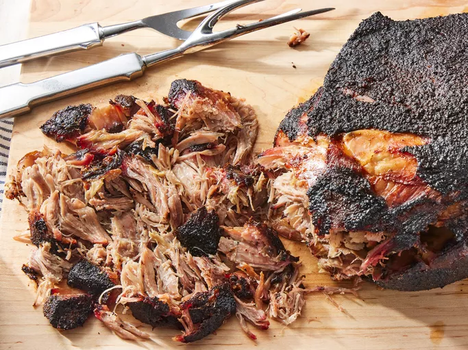

Smoked Pulled Pork
Home

Smoked pulled Pork
This is a recipe for smoked pulled pork. It will be super moist and tasty with a simple
recipe and long cook time.
Ingredients
- Pork shoulder
- Black Pepper
- Salt
- Apple cider
Steps
- Rub pork shoulder with even parts black pepper and salt. Nice thick coat will bring out the
flavors and make a nice crust in the end.
- Lay prepared pork shoulder in the middle of the smoker at 225 degrees
- Cook until internal temp is 200 degrees. About 8 hours
- Remove pulled pork and let cool for 30 minutes, then pull apart with forks
- Serve and enjoy!